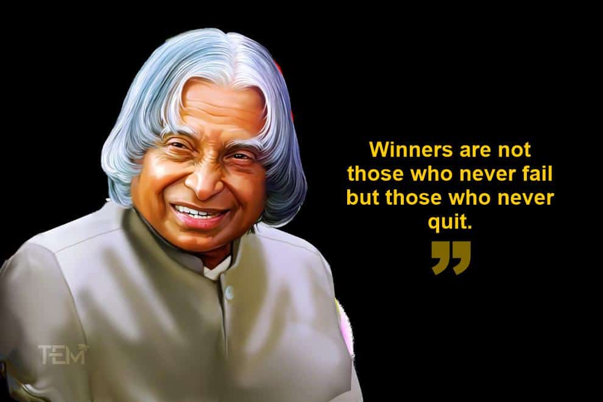

Dr. A.P.J. Abdul Kalam
Missile Man of India

One of Dr. A. P. J. Abdul Kalam's famous quotes.
Here's a timeline of Dr. A.P.J. Abdul Kalam's life:
- 1931 - Born in Rameswaram, Tamil Nadu, India.
- 1954 - Graduates in aeronautical engineering from the Madras Institute of Technology.
- 1960 - Joins the Defense Research and Development Organization (DRDO).
- 1969 - Becomes the project director of India's first indigenous Satellite Launch Vehicle (SLV-III) at ISRO.
- 1982 - Receives the Padma Bhushan award for his contributions to India's space technology.
- 1998 - Serves as the Chief Project Coordinator for India's Pokhran-II nuclear tests.
- 2002 - Becomes the 11th President of India, serving until 2007.
- 2006 - Publishes his autobiography, "Wings of Fire."
- 2007 - Establishes the "What Can I Give?" movement, promoting a culture of giving back to society.
- 2011 - Inaugurates the Dr. A.P.J. Abdul Kalam Technical University (formerly known as Uttar Pradesh Technical University).
- 2015 - Passes away on July 27 while delivering a lecture at the Indian Institute of Management Shillong.
"Dr. Kalam was a great scientist, an inspiring leader, and above all, a wonderful human being. He touched the lives of everyone he met."
-- Former Indian Minister of External Affairs Sushma Swaraj